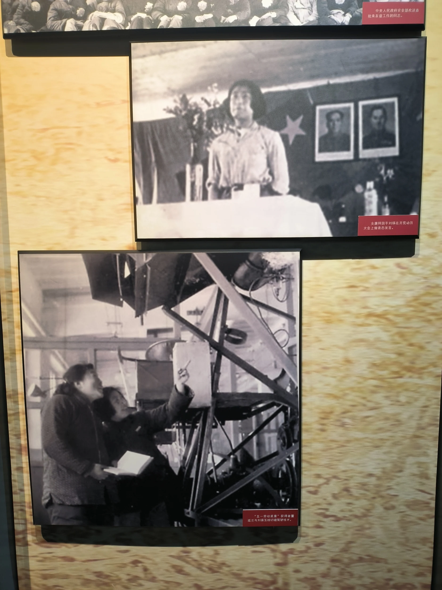

北大荒女机手 · 梁军与刘瑛
梁军在德都带领女子拖拉机队开荒。受她启发来到北大荒的刘瑛，后来在友谊农场开起了联合收割机。

新中国第一位女拖拉机手
梁军
梁军1947年进入黑龙江德都县的萌芽乡村师范学校。1948年，她到北安参加拖拉机手训练班。七十多名学员中只有她一名女性。学会驾驶后，她回到学校农场参加开荒。
1950年6月，梁军女子拖拉机队在萌芽乡村师范学校农场成立。她和11名队友驾驶三台苏式“纳齐”拖拉机，当年开荒3400亩、播种小麦1950亩。1950年，她获全国劳动模范。1952年，这支队伍并入查哈阳农场。
园中把红色拖拉机和放大的第三套人民币壹元券图案放在一起。票面女拖拉机手以梁军为原型。她的早期垦荒经历发生在德都一带，友谊的博览园把她的事迹纳入北大荒农机史展示。

友谊农场的女康拜因手
刘瑛
1950年，14岁的刘瑛，从北京女三中和同学林泽一起到黑龙江，想追随梁军学开拖拉机。她先在通北农场学习和工作。1954年筹建大型国营谷物农场时，她作为机手来到友谊，后来成为新中国最早驾驶联合收割机的女机手之一。
“康拜因”是联合收割机当时常用的音译。它把割取、脱粒和清选连在一起，工作方式和负责牵引犁具、播种机的拖拉机不同。友谊博物馆保留了她在开荒动员大会上发言的照片，也展出了她和五一劳动奖章获得者童延兰切磋驾驶技术的影像。
她曾使用牵引式联合收割机，一个班次收割小麦25.3公顷，所在车组获团中央授予“保尔·柯察金突击队”称号。
1956年，刘瑛带领的机车组改装农机，完成了407公顷的收割任务。她在1957年获评全国农业劳动模范，并赴莫斯科参加第六届世界青年联欢节。后来，她曾任友谊县人大常委会副主任和主任。
查阅来源
梁军事迹还参照了农机博览园的梁军纪念碑，刘瑛和童延兰的影像见友谊博物馆展陈。